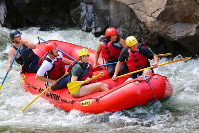

Tudo começou no início dos anos 2000, quando um grupo de cinco amigos apaixonados por canoagem e
biologia decidiu
explorar os rios mais desafiadores da região. O que antes era apenas um hobby de fim de semana logo
revelou uma vocação
maior: o desejo de compartilhar a sensação de liberdade e o respeito pelos rios com o mundo. Com
apenas dois botes
infláveis usados e muita determinação, fundamos a White Water Rafting, movidos pelo propósito de
transformar rios
selvagens em caminhos de pura superação e descoberta.

Duas décadas depois, aquela pequena iniciativa local se transformou em uma das maiores referências
em turismo de
aventura do país. Hoje, já guiamos mais de 50 mil aventureiros — de famílias que buscam o primeiro
contato com o rio a
atletas experientes atrás de corredeiras de classe V. Nossa estrutura expandiu para uma base moderna
com equipamentos
importados de última geração e uma equipe de instrutores certificados internacionalmente pela
International Rafting
Federation (IRF), garantindo diversão extrema com risco zero.